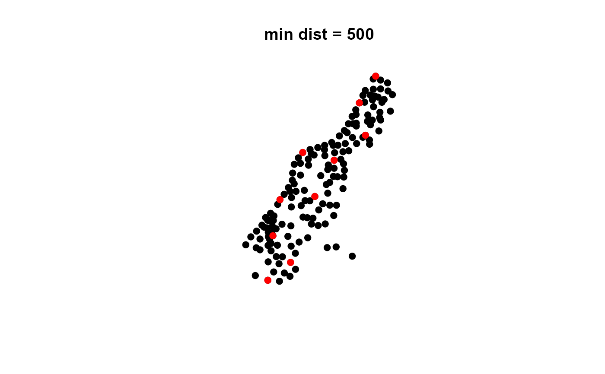

Draws a minimum, and optional maximum constrained, distance sub-sampling
subsample.distance( x, size, d, d.max = NULL, replacement = FALSE, latlong = FALSE, echo = FALSE )
| x | A spatial polygons or points sp object |
|---|---|
| size | Subsample size |
| d | Minimum sampling distance |
| d.max | Maximum sampling distance |
| replacement | (FALSE/TRUE) Subsample with replacement |
| latlong | (FALSE/TRUE) Is the data in a geographic projection |
| echo | (FALSE/TRUE) Print min and max sample distances |
A subsampled spatial polygons or points sp object
This function provides a distance constrained subsample of existing point or polygon data
Jeffrey S. Evans <jeffrey_evans@tnc.org>
# \donttest{ library(sp) data(meuse) coordinates(meuse) <- ~ x+y # Subsample with a 500m minimum sample spread sub.meuse <- subsample.distance(meuse, size = 10, d = 500, echo = TRUE)#> Sample iteration= 1 #> Sample iteration= 2 #> Sample iteration= 3 #> #> Min distance for 2 = 625.6597 #> Max distance for 2 = 625.6597 #> Sample iteration= 1 #> #> Min distance for 3 = 761.3475 #> Max distance for 3 = 1191.008 #> Sample iteration= 1 #> Sample iteration= 2 #> #> Min distance for 4 = 2110.756 #> Max distance for 4 = 3301.708 #> Sample iteration= 1 #> #> Min distance for 5 = 780.1775 #> Max distance for 5 = 1969.913 #> Sample iteration= 1 #> Sample iteration= 2 #> #> Min distance for 6 = 593.7424 #> Max distance for 6 = 3890.498 #> Sample iteration= 1 #> Sample iteration= 2 #> Sample iteration= 3 #> Sample iteration= 4 #> Sample iteration= 5 #> Sample iteration= 6 #> Sample iteration= 7 #> Sample iteration= 8 #> Sample iteration= 9 #> Sample iteration= 10 #> #> Min distance for 7 = 607.3977 #> Max distance for 7 = 3606.854 #> Sample iteration= 1 #> Sample iteration= 2 #> Sample iteration= 3 #> Sample iteration= 4 #> Sample iteration= 5 #> Sample iteration= 6 #> Sample iteration= 7 #> Sample iteration= 8 #> Sample iteration= 9 #> Sample iteration= 10 #> Sample iteration= 11 #> Sample iteration= 12 #> #> Min distance for 8 = 613.8607 #> Max distance for 8 = 2101.733 #> Sample iteration= 1 #> Sample iteration= 2 #> #> Min distance for 9 = 664.8045 #> Max distance for 9 = 2968.147 #> Sample iteration= 1 #> #> Min distance for 10 = 549.1311 #> Max distance for 10 = 4385.566# Check distances dm <- spDists(sub.meuse) diag(dm) <- NA cat("\n", "Min distance for subsample", min(dm, na.rm=TRUE), "\n")#> #> Min distance for subsample 549.1311#> Max distance for subsample 4385.566# Subsample with a 500m minimum and 3500m maximum sample spread sub.meuse <- subsample.distance(meuse, size = 10, d = 500, d.max = 3500) plot(meuse,pch=19, main="min dist = 500, max dist = 3500")# Check distances dm <- spDists(sub.meuse) diag(dm) <- NA cat("Min distance for subsample", min(dm, na.rm=TRUE), "\n")#> Min distance for subsample 519.3573#> Max distance for subsample 3436.324# }